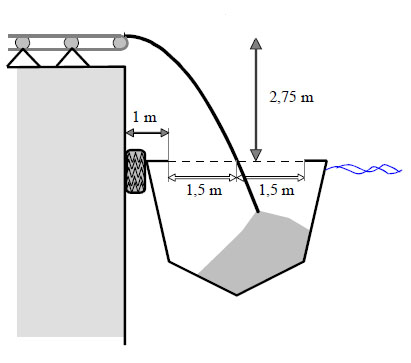

Aufgabe 121 Der Lastkahn wird mit Kies befüllt. Der Kies verlässt das Förderband am höchsten Punkt des Graphen einer Parabel der Form y = ax2. In welcher Entfernung von der Kaimauer trifft der Kies in den Kahn, wenn der 4 m tiefer liegt?  Der Koordinatenursprung liegt im Scheitelpunkt der nach unten geöffneten symmetrischen Parabel --> a muss negativ sein. Parabel der Form f(x) = ax2 Der Punkt in der Mitte des Lastkahns hat die Koordinaten (2,5|-2,75) In f(x) = ax2 eingesetzt: -2,75 = a * (2,5)2 - 2,75 = a * 6,25 |:6,25 a = -0,44 f(x) = -0,44 * x2 Liegt der Kahn 4 m tiefer ändert sich -2,75 m in - 6,75 m. -6,75 = - 0,44 * x2 :(-0,44) 15,34 = x2 |√ x1,2 = ± 3,9 Nur die positive Richtung kommt für die Lösung in Frage --> x = 3,9 m